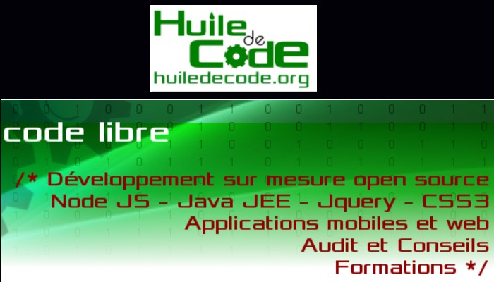

Durant ma deuxieme année de BTS SIO option SLAM j'ai effectué un stage de 5 semaines dans l'entreprise Huile de code. Huile de Code est une société de développeurs de logiciel Libre. Une équipe spécialisée dans les technologies "open source" les plus avancées.
Présentation de l'entreprise :
Huile de Code est une société de développeurs de logiciel Libre. Une équipe spécialisée dans les technologies "open source" les plus avancées. "Nous faisons le choix dans HdC de produire et utiliser du logiciel Libre.De nous spécialiser dans les applications dites "Temps réel". Et d'utiliser les derniers langages informatique les plus performants.Nous avons le statut de Jeune Entreprise Innovante, et l'agrément Crédit d'Impôt Recherche (C.I.R). Un logiciel Libre est un logiciel qui peut être utilisé, modifié et redistribué sans restriction par la personne à qui il a été distribué. Un tel logiciel est ainsi susceptible d'être soumis à étude, critique et correction. Pour nos clients, c'est avant tout l'assurance de la fiabilité et pérénité de leur logiciel. HdC s'inscrit dans une démarche de partage des connaissances et une logique de prestations dont le coût reste adapté au plus juste des besoins.
Mission du stage:
Participation au projet votremachine.com
Il s'agit d'un site internet permettant aux agriculteurs de louer leur materiel entre eux. Construction du site : Codeigniter, Lamp, Ungit, Atom, Modèle MVC, PHP, HTML/CSS, Javascript Rencontre avec le client.
Intitulé : Développement de modules métiers dans une applications web.
Experience accomplis :
Participation à un projet d’évolution d’un SI (solution applicative et d’infrastructure portant prioritairement sur le domaine de spécialité du candidat. Prise en charge d’incidents et de demandes d’assistance liés au domaine de spécialité du candidat. Productions relatives à la mise en place d’un dispositif de veille technologique et à l’étude d’une technologie, d’un composant, d’un outil ou d’une méthode. Analyse du cahier des charges d'un service à produire : méthode Agile et scrum. Étude de l'impact de l'intégration d'un service sur le système informatique. Étude des exigences liées à la qualité attendue d'un service. Déploiement d'un service. Participation à un projet. Accompagnement des utilisateurs dans la prise en main d'un service . Suivi et résolution d'incidents. Suivi et réponse à des demandes d'assistance. Identification, qualification et évaluation d'un problème. Proposition d'amélioration d'un service. Proposition d'une solution applicative. Conception ou adaptation de l'interface utilisateur d'une solution applicative. Conception ou adaptation d'une base de données . Gestion d'environnements de développement et de test. Développement, utilisation ou adaptation de composants logiciels. Rédaction d'une documentation d'utilisation. Analyse et correction d'un dysfonctionnement, d'un problème de qualité de Recueil d'informations sur une configuration et ses éléments. Suivi d'une configuration et de ses éléments . Repérage des compléments de formation ou d'auto-formation. Étude d˜une technologie, d'un composant, d'un outil ou d'une méthode.
Technologie utilisée :
Environnement Linux, Lamp, Codeigniter, Bootstrap, Atom, Ungit, Git, Mantis bug Tracker.
Langage utilisé :
HTML/CSS, Javascript, Php, MySQL.